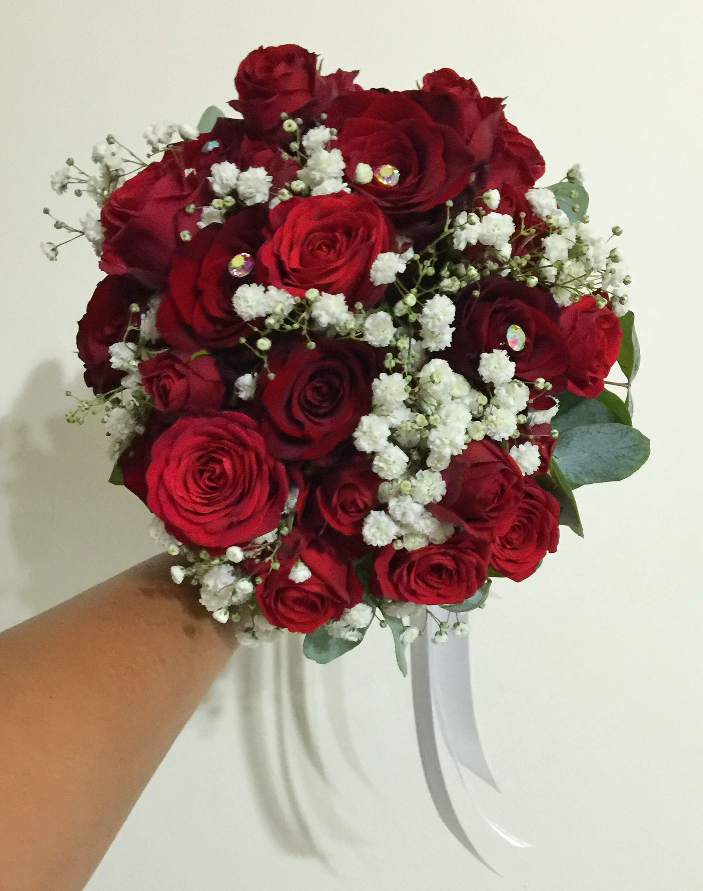
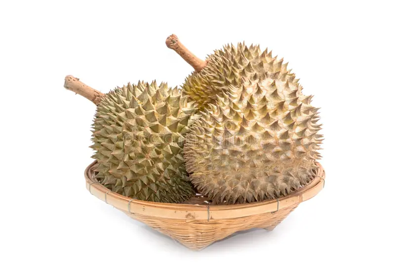
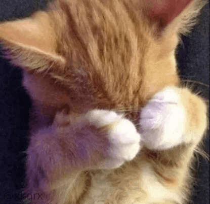
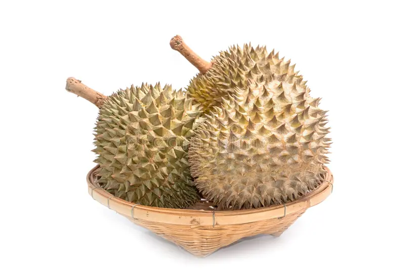
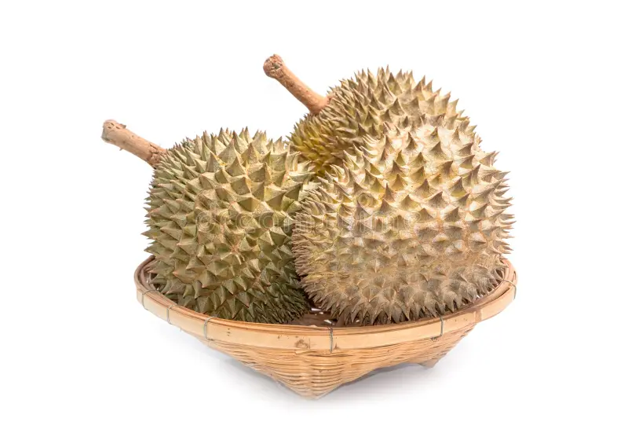

I got you roses and jasmines since I know you love them.

Wanna buy some fruits? 🍓🥭
Here, I bought you strawberries, mangoes, and durian.

Let’s watch something 🎬
Didn’t you say you love this anime? What a coincidence!
I’m hungry… wanna eat? 🍛
I made you some Burmese curry since that’s your favorite, right?
Oh… one more thing 💭

Happy Valentine’s Day my Shoonie ❤️
I know this isn’t the typical “Valentine’s Day” gift.
But I still wanted to take a moment to tell you how much I appreciate you.
Distance isn’t always easy, and whatever this is that we have isn’t always simple either.
But you make it feel steady. You make it feel natural.
I never feel like I’m forcing anything with you, and that’s rare.
I appreciate how you show up. How you listen.
How you care in quiet ways.
How patient you are with me.
You don’t make things dramatic. You just… stay.
And that means more than you probably realize.
You’ve become a constant in my days.
Not loud. Not overwhelming. Just solid.
And I’m grateful for that.
So yeah. No big speeches. No cheesy lines.
Just thank you, for being you,
and for choosing to be here with me,
even from miles away.
Happy Valentine’s Day.
– the GOAT Lalloyd


 
